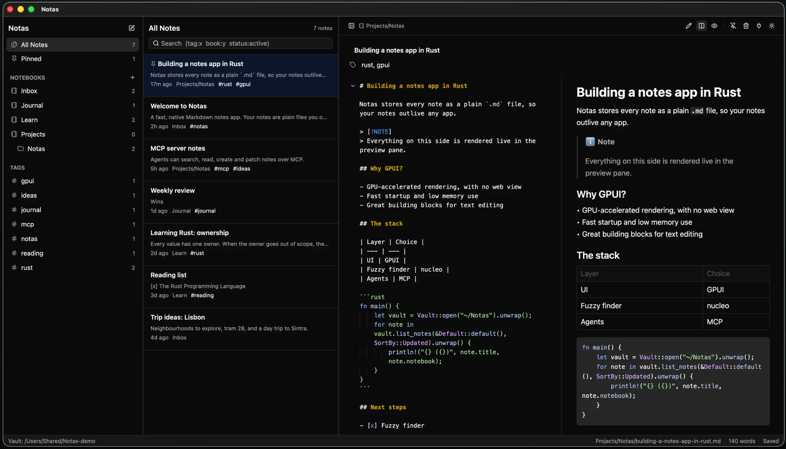

Plain files, no lock-in
Every note is a Markdown file with YAML frontmatter in a folder you own. Notebooks are folders. Open them in any editor, keep them in git.
A fast, native Markdown notes app for macOS.
Your notes stay plain .md files, and your AI agents can read and edit them over MCP.

Every note is a Markdown file with YAML frontmatter in a folder you own. Notebooks are folders. Open them in any editor, keep them in git.
Written in Rust on GPUI, the GPU-accelerated UI framework behind the Zed editor. No Electron, no web view.
Live Markdown preview with autosave, tables, task lists, alerts and syntax highlighting for about 35 languages. Paste or drop images straight into a note.
⌘P opens an fzf-style palette: find notes, run commands, jump to notebooks, tags or headings, or search note contents with /.
Optional Vim keybindings in the editor, with motions, operators, text objects and visual mode. Off by default, toggle with ⌘⇧V.
Hide the sidebar and note list with ⌘⇧D and write full width. Wiki links, backlinks, tags and pinned notes keep everything connected.
~/Notas/ ├── Inbox/ │ └── meeting-notes.md ├── Work/Ideas/ │ └── mcp-server.md ├── .attachments/ # pasted images └── .trash/ # deleted notes
--- title: Rust GPUI ideas tags: - rust - gpui status: active pinned: false --- # Ideas - fuzzy finder - [[Vim mode]]
Notas ships with notas-mcp, a Model Context Protocol server inside the app.
Point Claude Code, Claude Desktop or any MCP client at it and agents can search, read, create and patch your notes. Changes show up in the app live.
# Claude Code
claude mcp add notas -- /Applications/Notas.app/Contents/MacOS/notas-mcp --vault ~/Notas
list-notebooks create-notebook rename-notebook delete-notebook
list-notes read-note create-note update-note patch-note
append-to-note delete-note search-notes list-tags tag-note read-backlinks
The app also has a panel (⌘,) with copy-ready config for other clients. The server runs over stdio, so there is no port or password to manage.
Notas.dmg from the button above.~/Notas.This release is not notarized by Apple yet, so macOS asks for confirmation the first time. Right-click the app, choose Open, then Open again. Or run:
xattr -dr com.apple.quarantine /Applications/Notas.app
Requires macOS 13 or later. Universal build for Apple Silicon and Intel.
~/Notas in git or any folder-sync tool.~/Notas. To use another folder, launch Notas from a terminal with NOTAS_DIR set. Deleted notes go to .trash inside the vault.